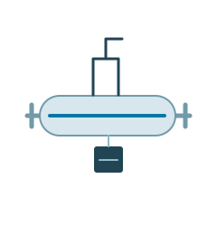
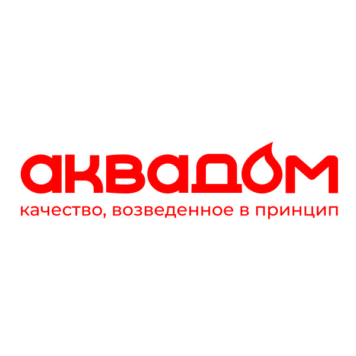
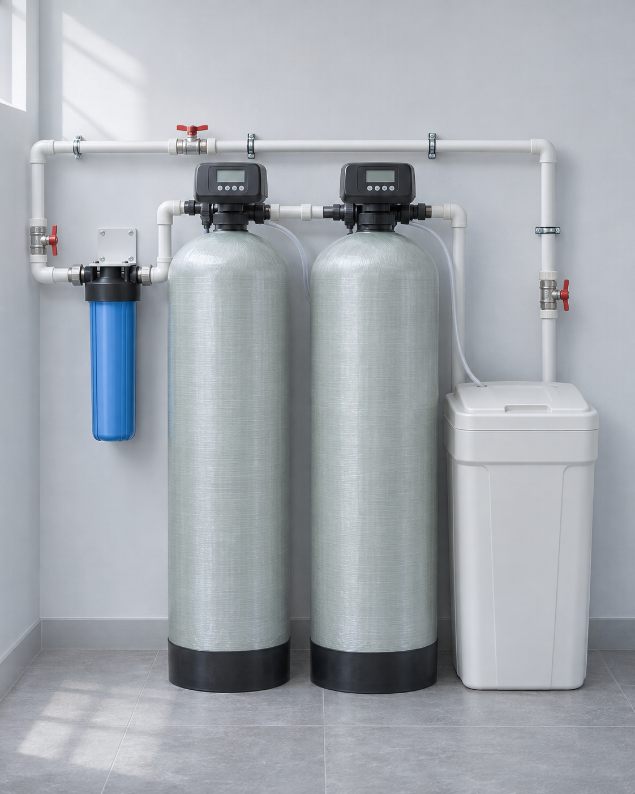
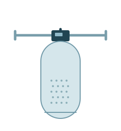
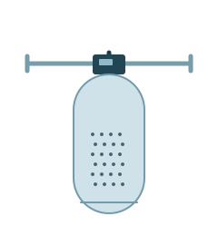
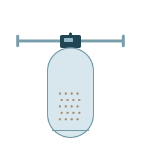
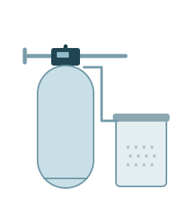
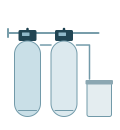

УФ-обеззараживание
Обработка воды ультрафиолетом. Установку подбираем с учётом качества исходной воды и нужного расхода.
от 10 340 ₽

Вода, с которой комфортно жить. Подберём систему под её состав и потребности вашего дома.
Уточним задачу и рассчитаем оборудование,
доставку и монтаж.

Знакомые признаки помогают описать задачу. А анализ воды помогает выбрать решение.
Выберите признак — покажем, с какого направления начать.
Посмотреть все системыОт отдельного фильтра до комплексной водоподготовки для всего дома.
Указана начальная стоимость оборудования. Комплектация, доставка и монтаж рассчитываются индивидуально.
Помочь с выбором
Обработка воды ультрафиолетом. Установку подбираем с учётом качества исходной воды и нужного расхода.
от 10 340 ₽

Удаление взвешенных частиц и нерастворённого железа. Для воды с осадком и мутностью.
от 30 659 ₽

Очистка от хлора и органических соединений, улучшение вкуса и запаха воды.
от 49 889 ₽

Очистка от растворённого железа и марганца. Подбор загрузки по результатам анализа воды.
от 39 249 ₽

Снижение жёсткости для защиты сантехники, бойлера и бытовой техники от накипи.
от 58 834 ₽

Несколько задач в одной системе: железо, марганец, сероводород и жёсткость. Состав определяем по анализу воды.
от 77 078 ₽
На схемах показан принцип устройства. Точная комплектация зависит от состава воды и условий установки.
Не нужно разбираться в фильтрующих загрузках. Расскажите, откуда вода, что вас беспокоит и сколько человек живёт в доме.
Если анализ уже есть, обсудим его со специалистом. Если нет — уточним, с чего начать.
Заранее обсудим состав работ, условия выезда и дальнейшее обслуживание.
Уточняем населённый пункт, источник воды, количество жильцов и точки водоразбора.
Изучаем анализ воды и условия размещения. Определяем необходимые ступени очистки.
Разделяем оборудование, доставку и монтаж, чтобы вы понимали состав предложения.
Согласуем работы, запуск системы и рекомендации по её дальнейшему обслуживанию.
Иллюстративное размещение.
Реальный проект зависит от вашего помещения.
Оборудование для воды и инженерных систем. Во Владивостоке, с вниманием к задачам Приморья.
На основном сайте можно познакомиться с ассортиментом фильтров, систем водоподготовки и сменных элементов. В компании есть сервисный центр во Владивостоке.
Возможность монтажа и обслуживания в вашем населённом пункте уточним при расчёте.
Короткие ответы на важные вопросы.
Для обоснованного подбора системы нужен анализ исходной воды. Обратиться можно и без него: специалист уточнит вашу задачу и расскажет о следующих шагах.
Это начальная стоимость оборудования. Точная комплектация, доставка и монтаж рассчитываются отдельно с учётом анализа воды, расхода и условий на объекте.
Зависит от состава системы. Для подбора полезны размеры помещения, фотографии ввода воды и сведения о канализации и электропитании. Требования уточним до согласования оборудования.
Подбираем оборудование для частных домов по Приморскому краю. Укажите населённый пункт: условия доставки, возможность выезда, монтажа и обслуживания обсудим индивидуально.
Периодичность зависит от оборудования, качества воды и потребления. Регламент замены расходных материалов и обслуживания определяют по документации выбранной системы.
Начнём с оценки её состава и состояния. При обращении расскажите, что установлено и что не устраивает в воде. Возможность модернизации определим после изучения исходных данных.
Расскажите о воде и доме.
Мы поможем разобраться с решением и стоимостью.
Владивосток, ул. Ильичёва, 6
Подбор систем для Приморского края